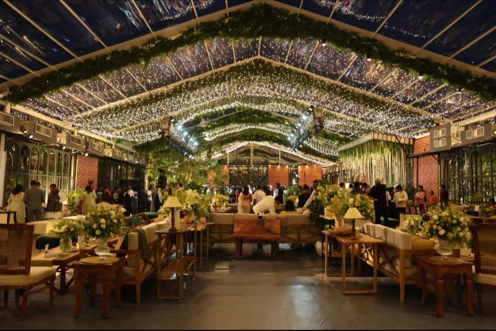

Home · Blog · Best Wedding Decorators in Noida – Showmaqers
Best Wedding Decorators in Noida – Showmaqers

A fabulous bride, a fantastic gathering, and an extravagant ambience—what’s the one element that ties it all together? Perfect wedding décor. The right decoration transforms a wedding from ordinary to magical, creating an unforgettable atmosphere for you and your guests. That’s where Showmaqers, the best wedding decorators in Noida , step in.
Whether you’ve dreamt of a royal mandap, a modern chic setting, or a themed celebration with dramatic entryways and floral extravagance, we bring your vision to life. At Showmaqers, we understand that every celebration is unique—and so is its décor. Our expert team works closely with you to create bespoke designs that reflect your personality, style, and dreams.
We offer complete décor solutions tailored to suit weddings, pre-wedding functions, parties, and even corporate events. From elegant floral arrangements to grand stage setups, we ensure every corner of your venue tells a story. We don’t just decorate spaces—we create experiences.
Our Wedding & Event Décor Services Include:
- Stage Decorations
- Mandap Decorations
- Entry Gate Designs
- Venue & Hall Décor
- Floral Arrangements
- Lighting & Balloon Setups
- Passage and Party Plot Decorations
No matter the scale—whether it’s an intimate engagement ceremony or a large-scale wedding celebration—we’re equipped to handle every detail with style and precision. Have a theme in mind? Great! We specialize in t heme-based décor, offering customized solutions for every concept you envision.
But our work isn’t limited to weddings. From birthday parties and anniversary events to business conferences and private gatherings, we bring the same flair and creativity to all types of events.
Our team at Showmaqers believes in delivering preference-oriented, customer-first experiences. Your satisfaction is our top priority. That’s why we provide transparent communication, on-time execution, and decor that exceeds expectations.
Want to see us in action? Visit our website gallery or YouTube channel to explore our past work and get inspired for your own big day.
Let’s make your celebration grand and unforgettable. Book your dates with Showmaqers best wedding decorators in Noida and turn your event into an experience worth remembering.